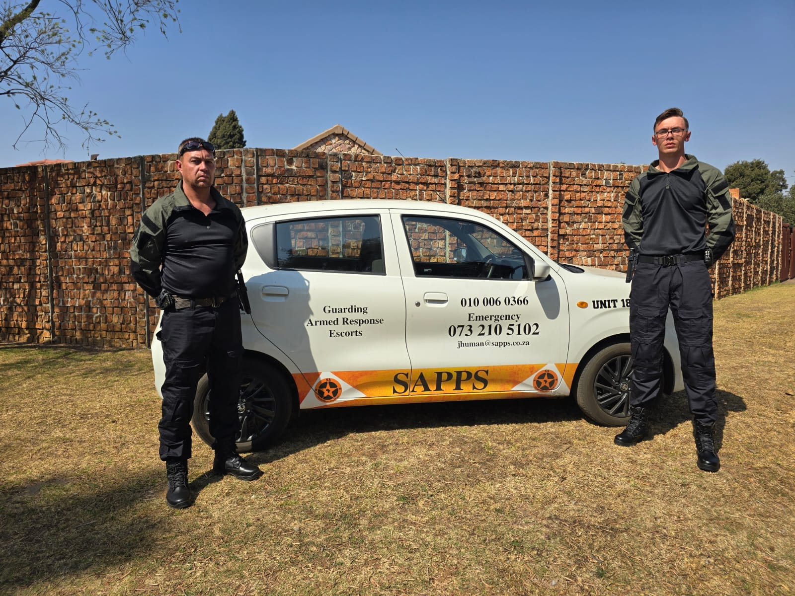
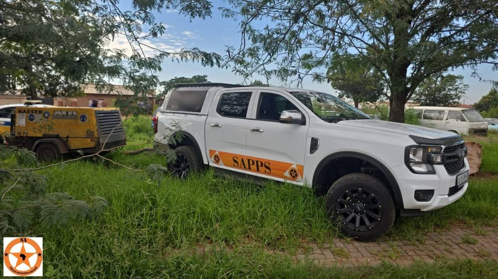

24 Hour Armed Response
 

 />
/>
We provide reliable, round-the-clock security guarding services to protect your property, staff, and assets—day and night. Whether you need guarding for a business, residential estate, construction site, or event, our trained and PSIRA-registered guards deliver visible, vigilant protection with professionalism and integrity.
Our services include:
- 24/7 on-site guarding
- Access control & visitor management
- Patrols and perimeter checks
- Incident reporting & emergency response
- Armed or unarmed options available
All guards are screened, uniformed, and supervised to ensure your safety and peace of mind at all times.
← Back to Home